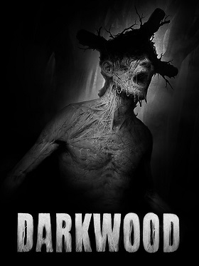

Description:
Darkwood is a 2017 survival horror video game developed and published by Acid Wizard Studio. The game was first released through Steam Early Access on July 24, 2014, eventually becoming a full game release on August 17, 2017[1] for Linux, macOS, and Windows.[2] The game was also ported to consoles by Crunching Koalas and was released for PlayStation 4, Nintendo Switch and Xbox One in May 2019, for Google Stadia on September 17, 2021 and for PlayStation 5 and Xbox Series X/S on October 28 and December 23, 2022. In 2025, Hooded Horse acquired the publishing rights for the PC version of the game. The game takes place in a mysterious dark forest "somewhere in the territory of the Soviet Bloc",[3] wherein the main characters have been trapped. It is played from a top down perspective. During the daytime the player can explore the world and prepare for the night where they have to survive in a hideout against encroaching enemies.
